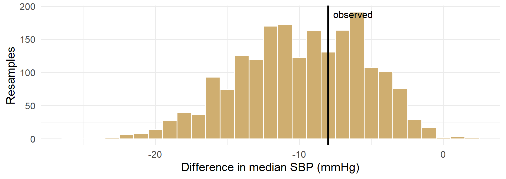
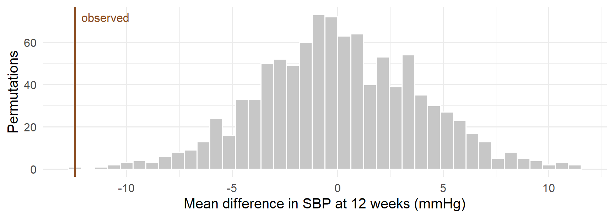
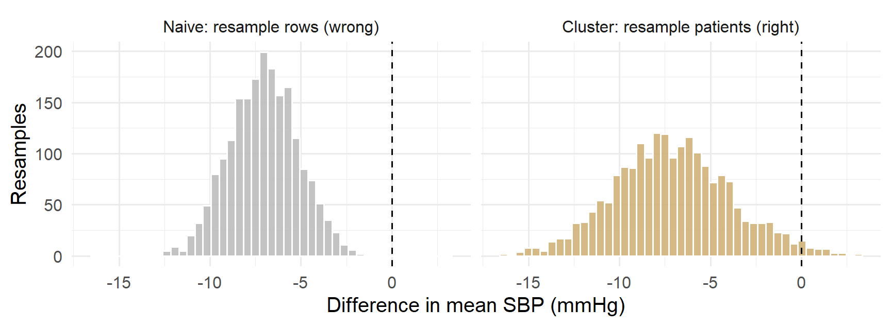

sbp <- c(150, 142, 168, 131, 155)
set.seed(1)
sample(sbp, replace = TRUE) # bootstrap: some values twice, some not at all[1] 150 131 150 142 155sample(sbp) # permutation: same values, new order[1] 168 142 131 150 155BIOS 6301 · Session 15 · Introduction to Statistical Computing
| Session | Question | Main product |
|---|---|---|
| 14 · Simulation | How does a method behave when the truth is known? | A checked simulation study |
| 15 · Resampling | What can repeated use of observed data tell us? | Uncertainty and held-out performance |
| 16 · Practical analysis | How do we fit, inspect, and deliver an analysis? | Models, numerical checks, and an auditable handoff |
Functions, validation, and iteration from Sessions 11–13 support all three.
| Block | Content |
|---|---|
| 1 | Three resampling targets |
| 2 | Bootstrap estimates and intervals |
| 3 | Bootstrap limitations and stability |
| 4 | Permutation tests and exchangeability |
| 5 | Participants, clusters, and pairs |
| 6 | Cross-validation and preprocessing |
| 7 | Model comparison, validation design, and lab |
| Method | Repeated operation | Target |
|---|---|---|
| Bootstrap | Sample observational units with replacement | Sampling uncertainty of an estimate |
| Permutation | Reassign labels under a valid null scheme | Null reference distribution of a statistic |
| Cross-validation | Fit on training data; predict held-out data | Performance on new observations |
Replacement alone does not determine validity. Specify the target, the unit, and which relationships the repeated operation must preserve.
[1] 150 131 150 142 155[1] 168 142 131 150 155For length(x) > 1, sample(x) permutes the values. To sample positions in code, prefer sample.int(length(x)).
The thing you want is a property of the population: the standard deviation of your estimator across repeated samples from it.
You do not have the population. You have one sample — which is your best available estimate of it.
The plug-in principle. Wherever the formula says population, substitute the empirical distribution of your sample, and compute.
So: resample from your data exactly as nature sampled from the population — same size n, drawn with replacement — and watch how the statistic moves.
flowchart LR D["<b>your data</b><br/>n = 60"] --> R["<b>resample</b><br/>n = 60,<br/>with replacement"] R --> S["<b>recompute</b><br/>the statistic"] S --> C["<b>collect</b><br/>one number"] C -.->|"B = 2000 times"| R C --> H["<b>bootstrap<br/>distribution</b>"] style D fill:#f4efe4,stroke:#CFAE70 style R fill:#CFAE70,stroke:#8a7448,color:#fff style S fill:#CFAE70,stroke:#8a7448,color:#fff
Three lines of code, and none of them are new. sample() is Session 14, indexing a data frame by a vector of row numbers is Session 4, and replicate() is a functional from Session 13.
We want the difference in median 12-week SBP between arms. There is no convenient formula for its standard error — which is exactly when the bootstrap earns its keep.
# Difference in median sbp_12, Treatment minus Placebo.
# Takes a data frame with `arm` and `sbp_12`; returns one number.
med_diff <- function(data) {
stopifnot(is.data.frame(data), all(c("arm", "sbp_12") %in% names(data)))
median(data$sbp_12[data$arm == "Treatment"]) -
median(data$sbp_12[data$arm == "Placebo"])
}
obs_med <- med_diff(trial)
obs_med[1] -8Statistic first, resampling second. If the function is wrong, 2000 resamples make it wrong 2000 times.
num [1:2000] -12 -4.5 -6 -4.5 -9 -8.5 -14 -3.5 -17 -8.5 ...[1] -12.0 -4.5 -6.0 -4.5 -9.0 -8.5
Figure 1: Bootstrap distribution of the difference in median SBP at 12 weeks.
Centred near the observed value. Ragged, because a median of 30 integers can only land on so many values.
The standard deviation of the resampled statistics is the estimated standard error. That is the whole definition.
This is bias relative to the empirical distribution of the observed sample. It is not the true bias measured against a known population parameter in Session 14.
[,1] [,2]
percentile -18.5 -2.0
basic -14.0 2.5Compare endpoints and assumptions. Do not choose whichever interval gives a preferred conclusion.
The bootstrap is most trustworthy when you have first watched it reproduce a result you can verify.
boot_se welch_se
3.562722 3.571884 Agreement for the mean is a useful code check. It does not establish that a bootstrap interval for a different statistic has correct coverage.
More resamples reduce computational variation; they do not add participants or repair an inappropriate bootstrap scheme.
[,1] [,2]
[1,] -19.0 -2.0000
[2,] -19.0 -2.4875
[3,] -19.5 -2.0000Check endpoints across documented seeds and larger B; keep all runs, not the best-looking one.
| Situation | Why extra resamples do not solve it |
|---|---|
| Very small samples | The empirical distribution may poorly represent the population |
| Extremes or boundary parameters | The ordinary bootstrap approximation can fail |
| Heavy tails | Usual finite-variance approximations may fail even though a sampling distribution exists |
| Dependent rows | Independent row resampling destroys the study’s dependence |
A smooth histogram is not proof of validity. Simulation in a relevant known-truth setting can evaluate coverage; the sampling design determines the resampling unit.
[1] 7[1] 0.634The resampled maximum can never exceed the observed maximum, and it equals it when a unique largest observed value is drawn at all — probability 1 − (1 − 1/n)n ≈ 0.63.
The bootstrap distribution of a maximum is a spike at the observed value with a short left tail. It can be a poor approximation to sampling a new maximum from the population. Increasing B cannot fix that mismatch.
Not installed here — this is a pointer, not a demonstration.
# boot: the classical implementation. Statistic takes (data, indices).
library(boot)
b <- boot(trial, statistic = function(data, i) med_diff(data[i, ]), R = 10000)
boot.ci(b, type = c("perc", "basic", "bca"))
# rsample: tidymodels. Resamples as a tibble of splits.
library(rsample)
bootstraps(trial, times = 1000)boot.ci() gives you BCa intervals — bias-corrected and accelerated — which adjust interval endpoints using bias correction and an acceleration term. They still require a suitable resampling scheme and regularity conditions; they do not repair dependence or an unrepresentative sample.
In a completely randomized trial with fixed arm sizes, a randomization test of the sharp null of no effect for any participant holds outcomes fixed and reassigns treatment according to the actual randomization scheme.
For independent observational samples, unrestricted label permutation instead needs exchangeability under the null, such as identical group distributions.
Equal means alone do not guarantee exchangeability when variances differ. Blocked or paired randomization requires restricted reassignment.
obs_mean <- mean_diff(trial)
set.seed(19)
P <- 999
perm_stat <- replicate(P, {
shuffled <- sample(trial$arm) # permutation, not a bootstrap
mean(trial$sbp_12[shuffled == "Treatment"]) -
mean(trial$sbp_12[shuffled == "Placebo"])
})
c(observed = obs_mean, perm_mean = mean(perm_stat), perm_sd = sd(perm_stat)) observed perm_mean perm_sd
-12.43333333 0.05789122 3.82457944 Note what is not shuffled: sbp_12 never moves. Only its label does. Jointly reordering outcome-label rows changes nothing. Breaking their pairing creates the reference distribution; the reassignment rule must match the design.

Figure 2: Permutation null distribution of the mean difference, with the observed value.
Centred at zero by construction. The p-value is the proportion of this histogram at least as extreme as the line.
With 4 patients per arm there are only choose(8, 4) = 70 possible label assignments. You can enumerate all of them:
[1] 70[1] 0.0571With 30 per arm there are choose(60, 30) ≈ 1.2 × 1017. So you sample from them instead — that is all “Monte Carlo permutation” means.
The observed arrangement is one of the possible arrangements. Counting it in both numerator and denominator is not a fudge to avoid zero — it is the correct count.
With P = 999 and no sampled statistic as extreme, report the adjusted Monte Carlo p-value 0.001 and its limited resolution. Increase P if finer resolution is needed; do not report p = 0.
For an observational comparison, do not interpret a significant label-permutation result as evidence of a causal treatment effect.
adjusted_p min_reportable
0.001 0.001 [1] 0.000000000 0.003685763
attr(,"conf.level")
[1] 0.95The interval describes the tail probability estimated by independent random permutations conditional on the observed data. It is not a confidence interval for the treatment effect. Exact enumeration has no Monte Carlo sampling error.
Treatment was randomized separately within each site. A student permutes all treatment labels across the pooled dataset.
What design feature has been lost? What must remain fixed?
Within-site assignment counts stay fixed. Use this rule only when it represents the actual randomization; an arbitrary blocking variable does not establish validity.
[1] -7.1180 rows. 60 patients. Hold on to that distinction — the rest of this block is about which number is the sample size.
estimate se
-7.100000 1.878739 2.5% 97.5%
-10.7 -3.4 Perfectly reasonable code. Runs without complaint. Produces a clean, symmetric histogram. The interval comfortably excludes zero.
It is wrong, and nothing on this slide tells you so.
Resample patients, and take all of each patient’s rows with them.
ids <- unique(trial_long$id)
rows_by_id <- split(seq_len(nrow(trial_long)), trial_long$id) # id -> row numbers
set.seed(22)
boot_clu <- replicate(B, {
picked <- sample(ids, replace = TRUE) # 60 patients, with repeats
diff_long(trial_long[unlist(rows_by_id[picked]), ])
})
c(row_se = sd(boot_row), cluster_se = sd(boot_clu),
ratio = sd(boot_clu) / sd(boot_row)) row_se cluster_se ratio
1.878739 3.222562 1.715279 Compare the two estimated SEs. With strong within-person dependence, independent row resampling understates uncertainty in this example.

Figure 3: Bootstrap distributions of the same estimate under two resampling schemes.
Same data, same estimate, same statistic function. Only the unit changed.
The teaching generator uses a participant intercept with SD 12 and visit noise with SD 4. Within each arm, its known correlation is:
rho design_effect approximate_se_inflation
0.90000 2.80000 1.67332 For equally sized clusters with this correlation structure, the design effect explains why three correlated visits are not three independent participants. This calculation uses the generator’s parameters, not a fitted ICC estimate.
The same mistake, in the other half of the session:
p_pats <- replicate(999, {
assigned <- sample(arm_by_id)
s <- assigned[match(trial_long$id, ids)] # join by ID, not row order
mean(trial_long$sbp[s == "Treatment"]) - mean(trial_long$sbp[s == "Placebo"])
})
c(p_row_unit = (sum(abs(p_rows) >= abs(obs_long)) + 1) / 1000,
p_patient_unit = (sum(abs(p_pats) >= abs(obs_long)) + 1) / 1000) p_row_unit p_patient_unit
0.001 0.034 Compare the results and their resolution. Randomisation happened to patients, so the permutation must too.
| Design | Bootstrap or validation unit | Permutation restriction |
|---|---|---|
| Independent participants | Participant | Allowed participant assignments |
| Repeated visits | Participant with all visits | Keep one treatment per participant |
| Cluster randomized | Clinic or other randomized cluster | Reassign at cluster level |
| Matched pairs | Pair | Swap labels within pairs when justified |
| Time series | Dependence-preserving blocks or temporal splits | Requires a justified dependence model |
Sampling, randomization, and prediction targets can imply different rules. State the rule before using sample().
The target is error for new participants from a stated population, using predictors available when the prediction will be made.
Training error evaluates data already used to fit the model. Cross-validation instead repeats fitting on training folds and predicting an assessment fold.
We will predict 12-week SBP from baseline variables. A week-12 derived variable would be unavailable at baseline, even if it greatly improved the reported score.
1 2 3
156.8157 158.8617 154.1750 lm(response ~ predictors, data = ...) fits a linear regression. predict(fit, newdata = ...) applies its learned coefficients. These predictions are in-sample; Session 16 examines model objects in detail.
fold Placebo Treatment
1 6 6
2 6 6
3 6 6
4 5 7
5 7 5Every participant belongs to one assessment fold and appears in training for the other four fits. Balanced counts do not alone establish representative folds.
id observed prediction
4 P004 163 153.8960
5 P005 140 142.3262
14 P014 139 139.6845The assessment outcomes are used for scoring, not fitting.
prediction <- rep(NA_real_, nrow(cv_data))
seen <- integer(nrow(cv_data))
for (k in sort(unique(fold))) {
test <- fold == k
fit <- lm(sbp_12 ~ sbp_0 + age + arm, data = cv_data[!test, ])
prediction[test] <- predict(fit, newdata = cv_data[test, ])
seen[test] <- seen[test] + 1L
}
stopifnot(all(seen == 1L), all(is.finite(prediction)))Preallocate with NA, not zero, so an unfilled prediction is detectable.
cv_rmse training_rmse
8.551577 7.930126 1 2 3 4 5
114.61935 79.66088 46.29515 70.75535 54.31664 RMSE has the outcome’s units. Aggregate participant losses before taking the square root. An unweighted average of fold RMSEs is generally a different quantity.
Learn the replacement from training rows; apply the same value to assessment rows. Mean imputation is a teaching example, not a general recommendation for missing data.
cv_predict <- function(data, fold) {
pred <- rep(NA_real_, nrow(data))
for (k in sort(unique(fold))) {
test <- fold == k
train <- data[!test, ]; assess <- data[test, ]
m <- mean(train$sbp_0, na.rm = TRUE)
if (!is.finite(m)) stop("training baseline entirely missing")
train$sbp_0[is.na(train$sbp_0)] <- m
assess$sbp_0[is.na(assess$sbp_0)] <- m
fit <- lm(sbp_12 ~ sbp_0 + age + arm, data = train)
pred[test] <- predict(fit, newdata = assess)
}
pred
}The same principle applies to scaling, feature selection, and tuning.
[1] 8.571046Also inspect training group sizes and factor levels. A predictor level never seen during training needs a declared handling strategy, not a silent recode.
leaky_data <- cv_missing
global_mean <- mean(leaky_data$sbp_0, na.rm = TRUE)
leaky_data$sbp_0[is.na(leaky_data$sbp_0)] <- global_mean
leaky_prediction <- cv_predict(leaky_data, fold)
c(valid = sqrt(mean((cv_missing$sbp_12 - held_out)^2)),
leaky = sqrt(mean((cv_missing$sbp_12 - leaky_prediction)^2))) valid leaky
8.571046 8.599058 The assessment covariates influenced the imputation rule. The scores may be close, and leakage need not improve every realization. Validity follows the information flow, not which score happens to be smaller.
| Step | Valid location |
|---|---|
| Fixed, prespecified unit conversion | Can be applied to all rows |
| Mean imputation or scaling estimated from data | Training fold |
| Choose features using outcome associations | Training fold, with selection validated |
| Select a model or tuning parameter | Inner validation, separate from final evaluation |
| Compute RMSE | Held-out outcomes after predictions are fixed |
A fixed rule is different from a rule estimated using assessment data.
training_mean_benchmark regression
15.007163 8.551577 Use the same folds for each candidate. More predictors need not improve prediction.
Placebo Treatment
1 6 6
2 6 6
3 6 6
4 6 6
5 6 6Stratification can stabilize composition. It does not repair dependence or make a rare category large enough for every fold.
Min. 1st Qu. Median Mean 3rd Qu. Max.
8.156 8.317 8.544 8.509 8.659 8.897 Repeated splits describe sensitivity to fold assignment on this dataset. They are not independent new studies; do not treat their SD as a sampling SE or their range as a population confidence interval.
| Deployment question | Appropriate split idea |
|---|---|
| Predict a new participant | Keep all visits of a participant together |
| Predict at a new clinic | Hold out clinics |
| Predict future outcomes | Train on earlier observations; assess later observations |
Random row folds answer the wrong question if the same participant appears on both sides.
Trying many models and reporting the lowest CV error uses the evaluation data to make a selection. The selected score can be optimistic.
Use a prespecified candidate, an untouched test set, or nested cross-validation:
After evaluation, a final model can be fitted to the intended full training set.
Explain: Which uncertainty shrinks with more bootstrap draws? What makes a prediction held out?
Next connection: Session 16 develops model inspection and prediction, numerical methods, validated text extraction, and reproducible handoffs.
BIOS 6301 · Session 15 · Resampling Methods